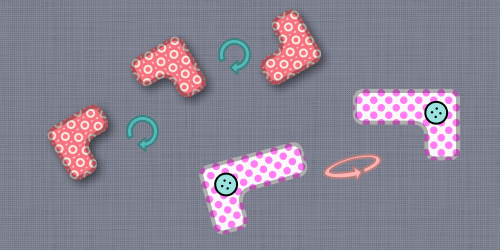

<div style="text-align: center">
  <h2>Welcome to next league</h2>
  You are now allowed to <keyword>rotate</keyword> and/or <keyword>flip</keyword> your patches before placing them
  on your board. This should help you to fill even larger portion of your quilt board.
  <br/><br/>
  See more details in the statement
  <br/><br/>
  
</div>